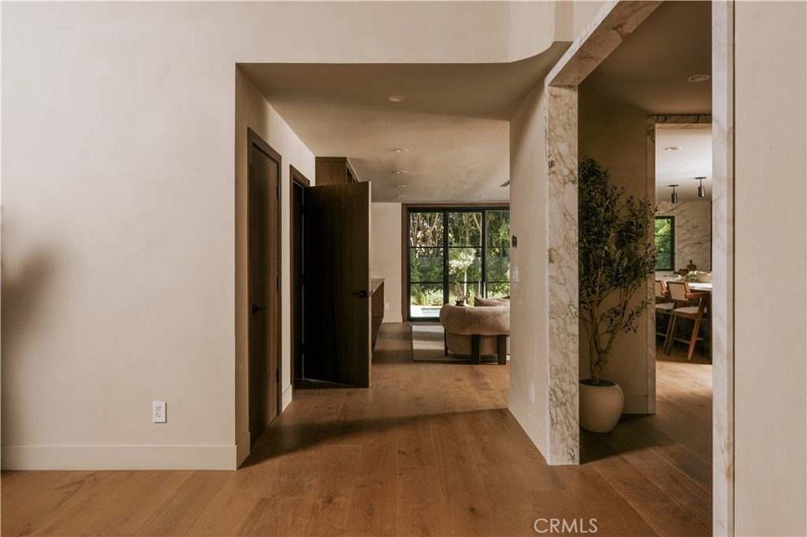

Obsession No. 004
Obsession No. 004Sherman Oaks
5114
Cedros Ave
Two olive trees old enough to have gnarled trunks flank the front door of a house that’s otherwise built completely new, and somebody clearly fought to keep them.
Why it made the edit
“Somebody made the call to build around them instead of clearing the lot flat.”
This one made the list because of the olive trees at the front door, two of them, trunks so gnarled and twisted they have to be decades older than the house itself, standing guard on either side of an entry that is otherwise built completely new.
Somebody made the call to build around them instead of clearing the lot flat, which tells you more about this house than the spec sheet does.
Inside, the kitchen is anchored by Viola Calacatta Monet marble, dramatic enough that it does most of the talking on its own, and the primary suite carries the same marble through with handcrafted Zia tile adding texture that photos never quite capture.
The backyard is a proper California retreat, a stone-wrapped pool and spa, a custom cabana, and an outdoor kitchen built for actually using, all custom wood siding and quiet architectural detail on the outside instead of anything loud.
It sits on a quiet, tree-lined street walkable to Kester Magnet School, minutes from Ventura Boulevard, the kind of block that still feels like a neighborhood even this close to everything. If two ancient olive trees and a slab of Viola marble sound like your kind of house, tell me and let’s go see it.


Want to see it in person?
Curious about this one?
Let’s talk.
Listed by George Ouzounian, Compass. House of Zonshine does not represent this listing. Property details are from listing information and public sources and should be independently verified.